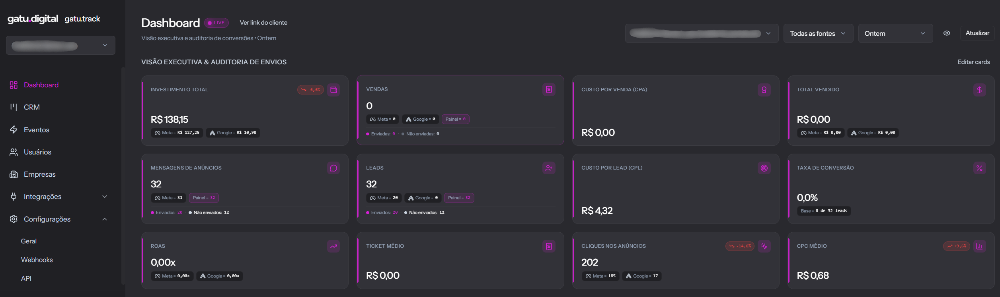

Clicou no botão
A pessoa pode abrir o WhatsApp e sair sem mandar mensagem.
Entenda quais anúncios trazem clientes pelo WhatsApp e invista com clareza.
Entender o caminhoImagine uma etiqueta que acompanha o contato. Ela ajuda a ligar o anúncio à conversa e, depois, à venda. Isso é trackear.
Ela encontra sua empresa enquanto olha o feed.
“Oi, queria saber mais sobre o serviço.”
A origem fica ligada ao resultado do atendimento.
O resultado volta para ajudar a encontrar novos clientes.
A pessoa pode abrir o WhatsApp e sair sem mandar mensagem.
Pode só perguntar o preço. Ainda não sabemos se vai comprar.
A venda precisa ser registrada e ligada à origem, quando possível.
Com a integração configurada, a venda registrada ajuda a plataforma a buscar pessoas com mais chance de comprar.
Medir só o clique é parar de contar a história no começo.
Dois anúncios. O mesmo investimento. Veja como a decisão muda quando você enxerga as vendas.
Exemplo fictício para explicar. Não são resultados de clientes.
| O que acompanhar | Anúncio A | Anúncio B |
|---|---|---|
| Investimento | R$ 200 | R$ 200 |
| Vendas registradas | 2 | 5 |
| Custo por venda | R$ 100 | R$ 40 |
O B trouxe menos conversas, mas cada venda custou menos em anúncios. O valor vendido e o que sobra depois dos custos também contam.
É como dizer: “Esse contato comprou. Procure pessoas com mais chance de fazer o mesmo.”
Com as integrações configuradas, os resultados registrados podem voltar para Meta e Google. Esses sinais ajudam a orientar a otimização.
Isso depende da configuração, da qualidade dos dados e das opções de cada plataforma. Não garante mais vendas.
Então o trackeamento é para você. Escolha seu segmento e veja como ligar o anúncio ao que acontece no atendimento.
Com o resultado registrado, você entende quais anúncios ajudaram a trazer esse cliente.
Se você atende e vende pelo WhatsApp, o trackeamento é imprescindível para você.
Na gatu.track, você acompanha investimento, contatos e vendas registradas. Assim fica mais fácil decidir onde investigar e o que ajustar.

De onde vieram?Entenda a origem dos contatos.
O que aconteceu?Acompanhe o avanço no atendimento.
O que ajustar?Compare investimento e resultados.
Você cuida do negócio. Nós ajudamos a conectar as informações para que suas decisões façam mais sentido.
Mostram o que conseguem medir. Um clique no botão não confirma uma mensagem ou uma venda. Para acompanhar o que aconteceu no atendimento, é preciso conectar e registrar essas etapas.
Sim, mas o caminho muda. No Meta, o anúncio pode abrir o WhatsApp diretamente. No Google, pode passar pelo site antes da conversa. Avaliamos como ligar a origem ao atendimento em cada caso.
Sim. Sua equipe ou um sistema integrado precisa informar o resultado. O trackeamento não adivinha se alguém comprou. Manter os registros em dia faz parte do trabalho.
Nem sempre. Permissões, troca de aparelho e informações ausentes podem deixar partes do caminho sem identificação. Os painéis também podem contar resultados de formas diferentes. Por isso, conferimos os dados.
Os dados mostram onde olhar. Oferta, preço, tempo de resposta e atendimento continuam importantes. Se chegam contatos e poucos compram, o próximo ajuste pode estar na conversa.
Acompanhe a origem dos contatos, registre as vendas e conecte os resultados às suas campanhas de Meta Ads e Google Ads.
R$ 227/mês
Quero implementarConte como você anuncia hoje. Vamos conversar sobre o trackeamento do seu WhatsApp.